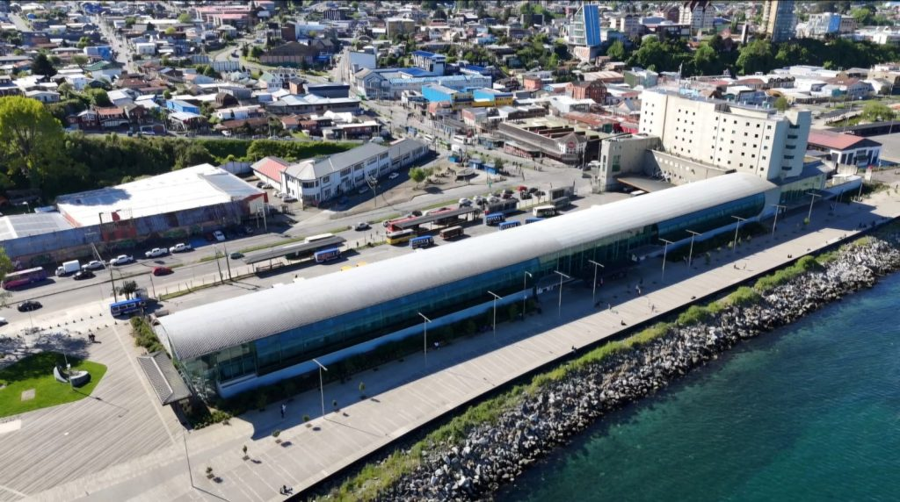

Terminal de buses
Donde comienza la magia (y el olor a orina también). Punto de partida ideal para quienes llegan desde otras ciudades y quieren comenzar el recorrido apenas bajan del bus.
Un dato curioso de la fauna del lugar es que los caninos de la zona parecen emigrar un par de semanas antes de fiestas patrias.